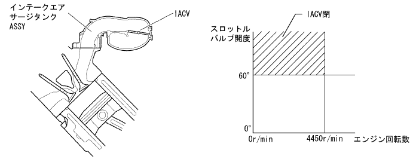
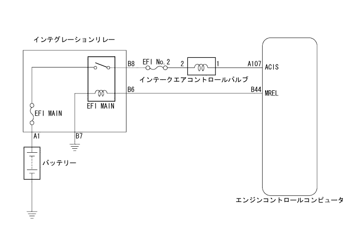
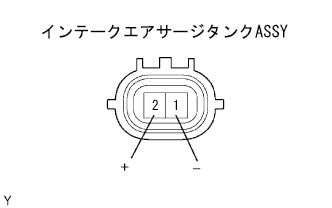
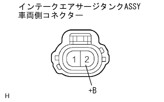
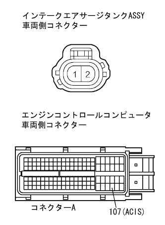

DTC P0660/96 Intake Control VSV (ACIS) |

| DTCNo. SAE/TCCS | DTC Detection Condition
| Inspection Area |
|---|---|---|
| P0660/96 |
|
|

| Step 1 | Perform TaSCAN Active Test (Intake Control VSV) |
Connect SST (TaSCAN) to DLC3.
With the engine stopped, turn the IG ON.
Following the SST (TaSCAN) screen display, select [Active Test] - [Intake Control VSV].
Operate the IACV (intake air control valve) and check whether an operating sound can be heard.
|
| ||||
| OK | ||
| ||
| Step 2 | Inspect Intake Air Surge Tank Assembly |
Disconnect the intake air surge tank assembly connector.
 |
Apply battery voltage between the terminals of the intake air surge tank assembly.
Check that a "click" sound is heard inside the intake air surge tank assembly.
|
| ||||
| OK | |
| Step 3 | Inspect Wire Harness and Connector (Power Source Voltage) |
ReferenceTurn IG ON.
 |
Using SST (Toyota electrical tester), measure the voltage between the terminals.
| Tester Connection (Terminal Symbol) | Condition | Standard |
|---|---|---|
| 2 (+B) - Body ground | IG ON | 11 to 14V |
|
| ||||
| OK | |
| Step 4 | Inspect Wire Harness and Connector (Intake Air Surge Tank Assembly - Engine Control Computer) |
 |
ReferenceDisconnect connector A of the engine control computer.
Using SST (Toyota electrical tester), measure the resistance between the terminals. (For Terminals of ECU, see)
| Tester Connection (Terminal Symbol) | Condition | Standard |
|---|---|---|
| A107 (ACIS) - Terminal 1 | Always | Below 1 Ω |
| Tester Connection (Terminal Symbol) | Condition | Standard |
|---|---|---|
| A107 (ACIS) and terminal 1 - Other terminals and body ground | Always | 10k Ω or higher |
|
| ||||
| OK | ||
| ||